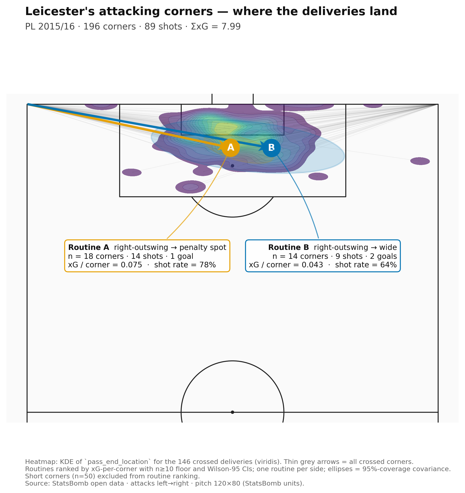
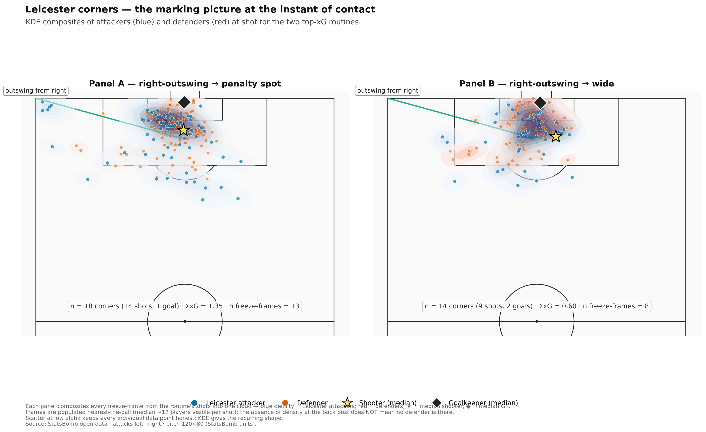
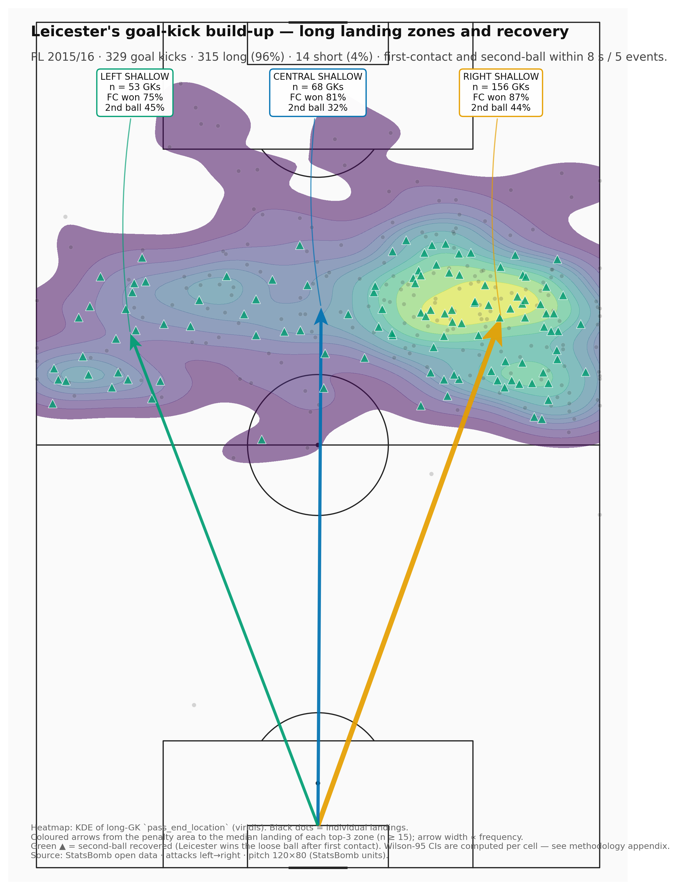
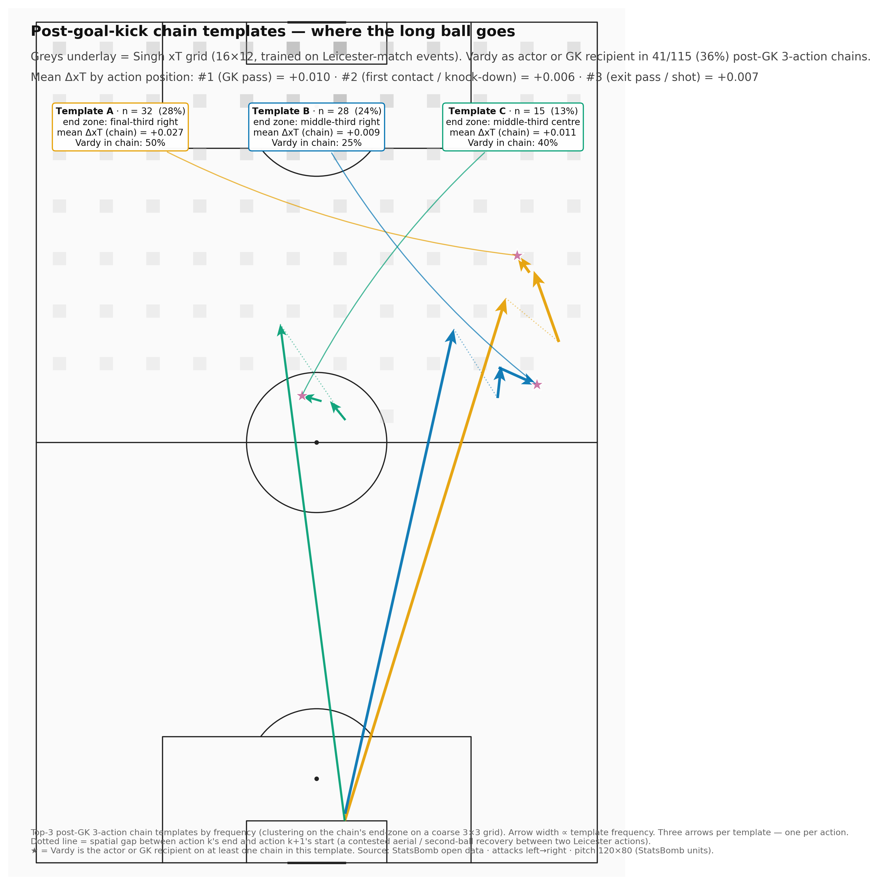

Leicester City 2015/16 — tactical briefing
Two single-side A4 cards: one on Leicester's attacking corners (which United had to defend), one on Leicester's goal-kick build-up (where the press flips possession). Public StatsBomb event data only. Methodology is data-source-agnostic and plugs into Opta / StatsBomb commercial feeds.
Card A — Leicester's attacking corners
How United defends them (and counter-exploits).
PL 2015/16 · 196 corners · 89 shots from corner sequences · Σ xG = 7.99 · 5 goals (tight 8 s / 6-event window).


Routine A — right-outswing → penalty spot
n = 18 corners · 14 shots · 1 goal · Σ xG = 1.35 (xG/corner = 0.075). Primary taker Christian Fuchs (16 of 18); primary target Robert Huth (7 of 13 shots; 9 of 13 are headers; 8 of 13 missed the target). Defender KDE peak (113.9, 36.6) — clustered in the front-post 6-yard band; attacker KDE peak essentially identical (113.9, 35.3): the contest happens in the same square metre as the block.
Routine B — right-outswing → wide
n = 14 corners · 9 shots · 2 goals · Σ xG = 0.60 (xG/corner = 0.043). Same right-side outswing, ball sits up outside the 6-yard box. Greater shooter variety (Vardy and Albrighton appear among the 8 shooters, alongside Huth, De Laet, Kanté, Morgan, Ulloa). Defender KDE peak (111.9, 42.0): the wider delivery drags defenders out — only 36% of defenders inside the 6-yard box vs 38% on Routine A.
The exploitation triggers
- When Fuchs sets to take a right-side corner, expect a left-foot outswinger curling to the front of the 6-yard box for Huth. Marker on Huth — front-post 6-yard band — is the single highest-leverage assignment. Shot rate 78%; goal rate 6%; winning the first jump is the whole job.
- If the front-post block is cleared early — i.e. takers set up wide and central runners drift back — Leicester's 'wide' variant goal-yields more (2 goals from 0.6 xG, n=14). Bias the second-line marker toward picking up Vardy, who appears in the wide-variant freeze frames as a back-post outlet.
Card B — Leicester's goal-kick build-up
Where United presses to flip possession.
PL 2015/16 · 329 goal kicks · 96% long · post-GK chains analysed with a hand-rolled Karun Singh xT grid (16 × 12, trained on Leicester-match events).


Headline policy: 96% long
Ranieri's Leicester explicitly refuses to play out from the back. The goal kick is a launch mechanism — Vardy or Okazaki contests the first ball, second-line runners win the knock-down, the third action is the breakaway pass or shot. Pressing the keeper is not productive against Leicester; the press has to start at the landing zone.
Where the long ball goes
- right shallow — n = 156 GKs, first contact won 87% [81, 92], second ball recovered 44% [36, 51], chain ≥3 actions 11%.
- central shallow — n = 68 GKs, first contact won 81% [70, 88], second ball recovered 32% [22, 44], chain ≥3 actions 12%.
- left shallow — n = 53 GKs, first contact won 75% [62, 85], second ball recovered 45% [33, 59], chain ≥3 actions 15%.
Vardy as the chain endpoint
Across the 115 complete 3-action chains following a long goal kick, Vardy is an actor on 41 (36%). Denominator = ALL post-GK 3-action chains; this is not a cherry-pick.
The press triggers
- Don't press Schmeichel. 96% of his goal kicks are long. A high press on the keeper gives Leicester the easy launch; instead, set the press at the landing zone — typically the shallow band 60–90 m from goal, central or right channel.
- The first contact is the only contestable moment. Pre-position the centre-back duel partner; whichever player wins this aerial wins the bulk of the second balls.
- The third action is where the chain dies. Mean ΔxT collapses on action #3 — that's where the press should aim to win the ball, not at the keeper.